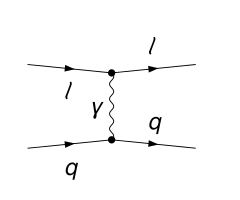
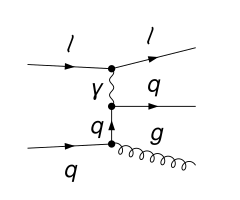
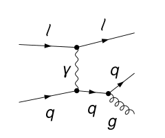
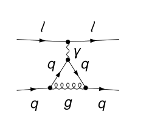

Lepton–quark scattering
$\ell\,q\to q+X$ at NLO in QCD, unpolarized and with the helicity difference of the incoming lepton and quark.




What is computed
For a measured parton of momentum $p$ the partonic cross section $\sigma = s\,E\,d\sigma/d^3p$ is written in $v = 1 + t/s$ and $w = -u/(s+t)$, with $s=(l+k)^2$, $t=(k-p)^2$, $u=(l-p)^2$ for the lepton momentum $l$ and the incoming parton momentum $k$ and $0 < v,w < 1$:
$$\sigma = \sigma_{\rm Born}\,\delta(1-w) + P(v,w)\,c_{\rm reg}(v,w) + P(v,1)\big[c_{0}(v)\,\big[\tfrac{1}{1-w}\big]_+ + c_{1}(v)\,\big[\tfrac{\ln(1-w)}{1-w}\big]_+ + c_{\delta}(v)\,\delta(1-w)\big],$$Here $\sigma_{\rm Born}$ is the lowest-order term, and $c_{\rm reg}$, $c_0$, $c_1$, $c_\delta$ are the coefficients $R$, $B$, $C$, $A$ of the paper, with $P$ its normalization $\mathcal N$. The scales enter through $L_R=\ln(\mu^2/s)$, with one common scale $\mu_R=\mu_F=\mu_F'=\mu_L=\mu$.
Here $P=\alpha_{\rm em}^2\alpha_s C_F e_q^2/(\pi s v w)$, $\sigma_{\rm Born}=2\alpha_{\rm em}^2e_q^2(1+v^2)/[s v(1-v)^2]$ unpolarized and $2\alpha_{\rm em}^2e_q^2(1+v)/[s v(1-v)]$ for the helicity difference. The photon-in-lepton subtraction is included.
Checks
Exact symbolic agreement with Hinderer, Schlegel and Vogelsang, Phys. Rev. D 92 (2015) 014001 and Phys. Rev. D 96 (2017) 014002, in all three algebra routes; pole cancellation; the vector form factor.